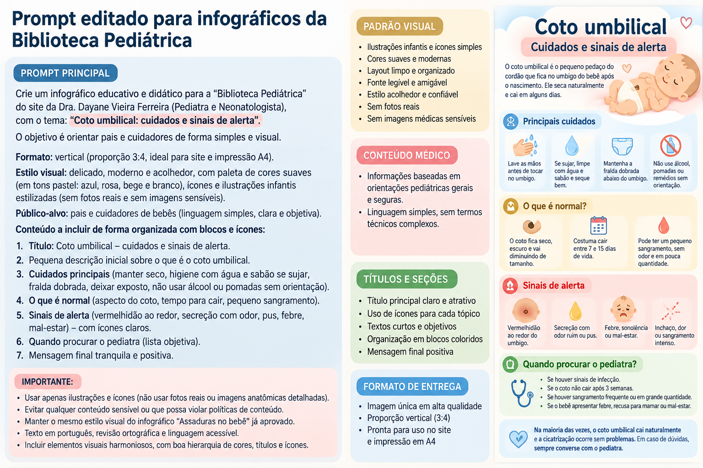

Coto umbilical do bebê
Cuidados simples com o umbigo do recém-nascido e sinais que podem indicar infecção ou necessidade de avaliação.
Cuidados no dia a dia
Mãos limpas
Lave as mãos antes e depois de manipular a região.
Mantenha seco
Deixe o coto limpo, seco e exposto ao ar sempre que possível.
Fralda abaixo do coto
Dobre a borda da fralda para evitar atrito e manter a região mais seca.
Não puxe
Deixe o coto se desprender naturalmente.
Precisa passar alguma coisa?
As recomendações internacionais atuais priorizam o cuidado seco e limpo. Não aplique pomadas, pós, receitas caseiras ou outros produtos por conta própria. Siga a orientação recebida na maternidade e pelo pediatra, especialmente se houver alguma situação clínica específica.
Sinais de alerta
Procure avaliação se houver:
- vermelhidão que se espalha pela pele ao redor do umbigo;
- pus ou secreção preocupante;
- sangramento persistente;
- mau cheiro acompanhado de sinais inflamatórios;
- febre, dificuldade para mamar, pouca atividade ou bebê com aparência de doença.
Infográfico

Fontes e revisão
OMS — Caring for a newborn
SBP — Como cuidar do umbigo do bebê?
NHS — Umbilical cord care
Última revisão: setembro de 2026.